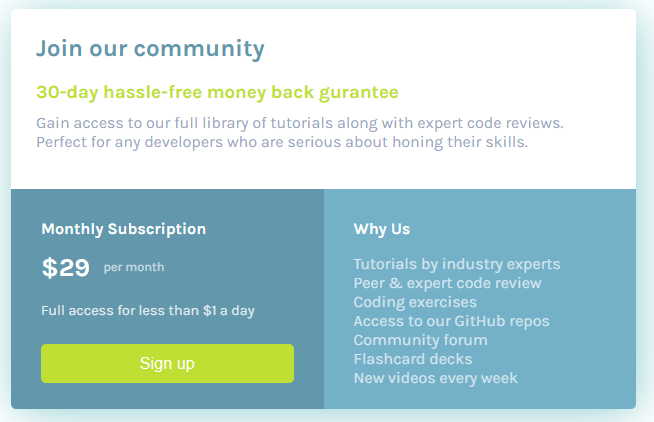

Hello! My name is Matthew Skelton and this is my portfolio site. A little about me I am a dedicated and results-driven software developer with 1 year of experience inAutomation Testing and 6 months of Android App Development. I am adept at designing and implementing innovative software solutions to solve complex business problems. I have proven ability to collaborate effectively with cross-functional teams and adapt quickly to emerging technologies.
Here is my GitHub Link where I store the source code for some of my projects.
Contact Me
Cell: 954-812-1015
Email: mjskelton77@gmail.com
Projects
Below I will list some of my projects with screenshots and descriptions of each.

A sample pricing card with responsive design Github
Developed and debugged the Ashley Furniture E-Commerce Android Application utilizing Kotlin, third-party APIs and JDK.
Completed development on a new curbside delivery feature to allow users to select their form of delivery.
Worked in an Agile environment with Azure DevOps tickets and version control.
Technologies Used: Azure, Android Studio, Kotlin
VR and PC Game Developer at Resilience Inc.
November 2020 - January 2022
Developed and designed Virtual Reality and PC games to teach kids Social Emotional Learning.
Worked in teams of three or independently to create two games:
Selena VR: A VR spacewalk from a space station to a ship as the space station is collapsing. Designed to help people learn to face their fears and anxiety
Dealing with Issues and Conflict: A 2D platformer following a knight trying to rescue his Queen.
Along the way he must collect fragments by answering questions developing the players conflict resolution skills.